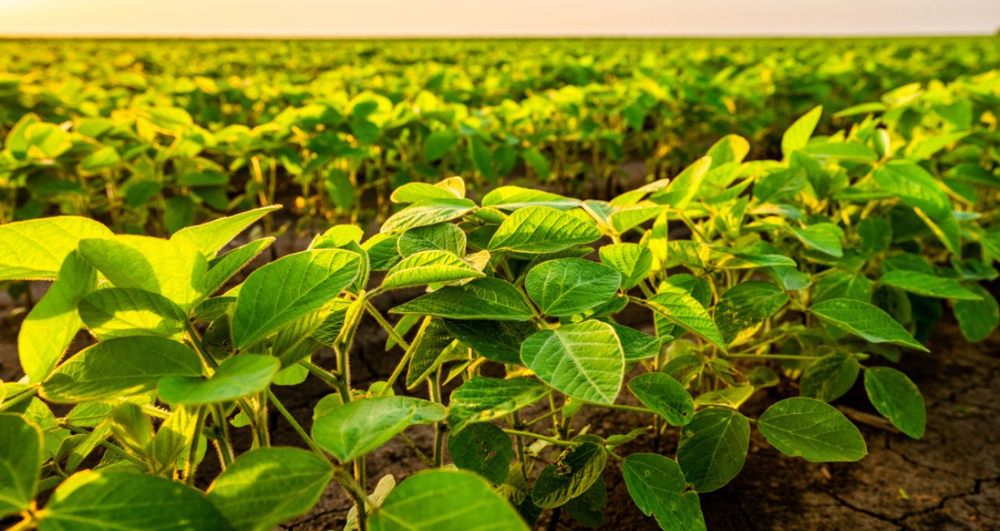

Vantagens
- Alta produtividade, com grandes rendimentos por hectare
- Demanda crescente, especialmente para exportação
- Possibilidade de diversificação de culturas no campo
- Uso crescente de tecnologias que melhoram a produtividade e reduzem os custos de produção
Desvantagens
- Impacto ambiental, como desmatamento e uso intensivo de agrotóxicos
- Monocultura, que pode levar à degradação do solo e perda de biodiversidade
- Dependência de insumos químicos e fertilizantes
- Vulnerabilidade a pragas e doenças, exigindo controle constante